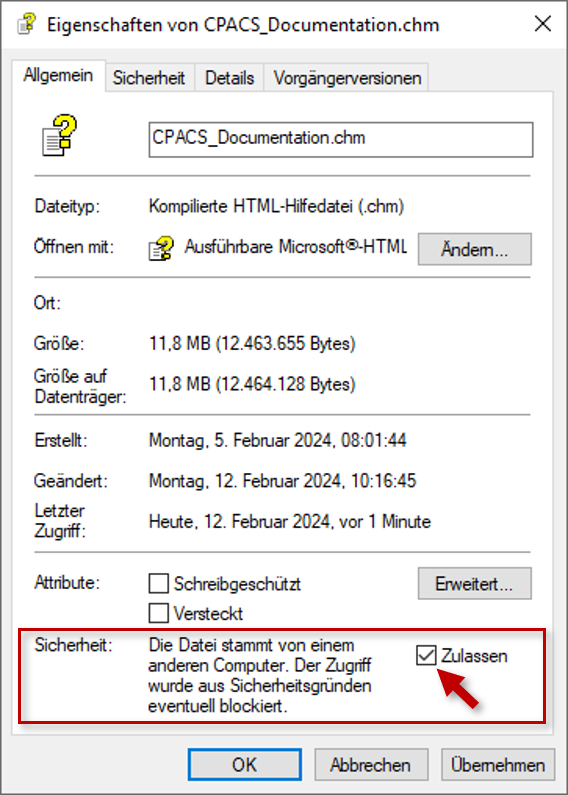
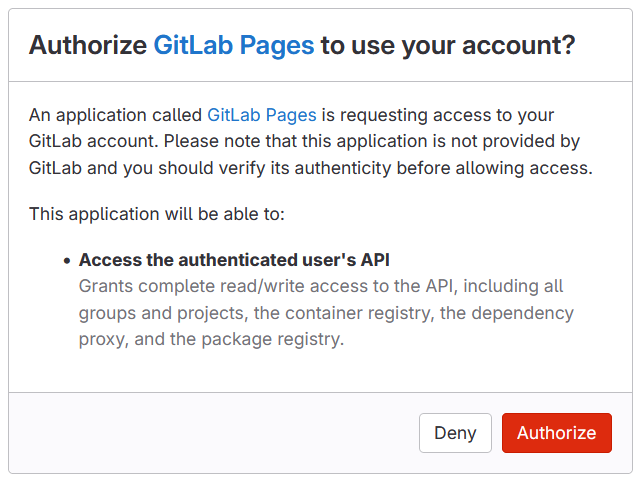

The published release and the ongoing development, both generated from the schema itself.
Published September 2026 · reworked systems, decks and fuel tanks
Open documentationAlso available

Windows blocks help files that came from the internet, so a downloaded .chm often opens empty. Right-click the file, open Properties, and tick the security box at the bottom of the General tab. The content appears once the file is reopened.
The single-file HTML above needs none of this and opens on any system.
The two releases before the current one are generated from their schema as well. Everything older is kept as a .chm download.
Published December 2023 · introduced systems and tank geometries
Open documentationAlso available
Published August 2022 · revised decks and mass breakdown
Open documentationAlso available
| CPACS 3.3 | |
|---|---|
| CPACS 3.2 | |
| CPACS 3.1 | |
| CPACS 3.0 | |
| CPACS 2.3.1 | |
| CPACS 2.3 |
Projects often try out extensions to the schema before they enter an official release. Their documentation is published separately.
| Impact Monitor | |
|---|---|
| Alicia | |
| Exact-2 | |
| Wing Mates | |
| ARCADE | |
| Diabolo |

Several of the project versions above are served from DLR GitLab Pages, which asks once for permission before redirecting. Click Authorize to continue.